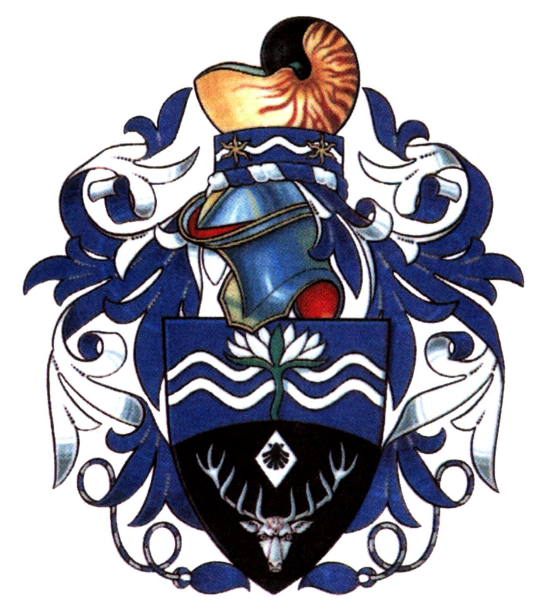

welcome to my site
My name is Lyn Xu, as you could probably tell. I am creating a website to procrastinate studying.
about me:
I am a first year undergraduate studying biological Natural Sciences at the University of Cambridge.
I reside at Lucy Cavendish College.
